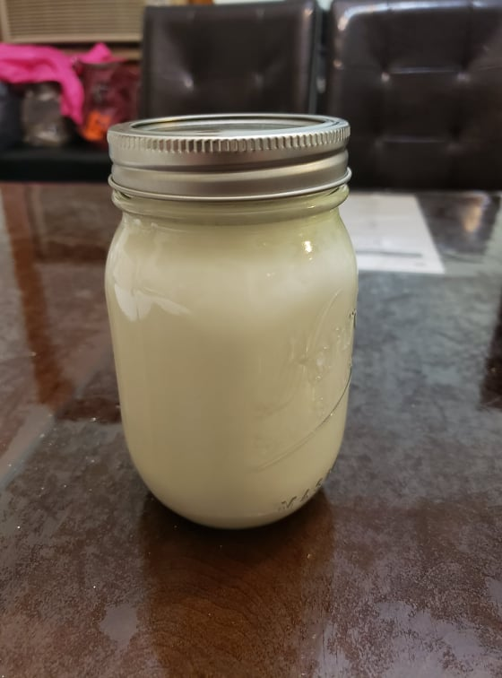

Yogurt

Ingredients:
- 4 cups Milk
- 2 tbsp Yogurt starter or Yogurt
Instructions:
- Make sure all the equipment is sterilized. Preheat an oven to 110 degrees Fahrenheit.
- Scald the milk. Bring the milk to 180 degrees Fahrenheit and then remove from heat.
- Let the milk cool. Once the milk comes down to about 110 degrees Fahrenheit, mix in the yogurt. Then place the milk into the oven and let ferment for about 8 hours before bottling and placing into a fridge.
- Optionally, after removing from the oven, let the yogurt sit for a few hours before placing into the fridge.
- For Greek yogurt, strain the yogurt with a cloth or towel until 1/4 cup of whey per cup of yogurt is strained out, about 30-60 minutes.